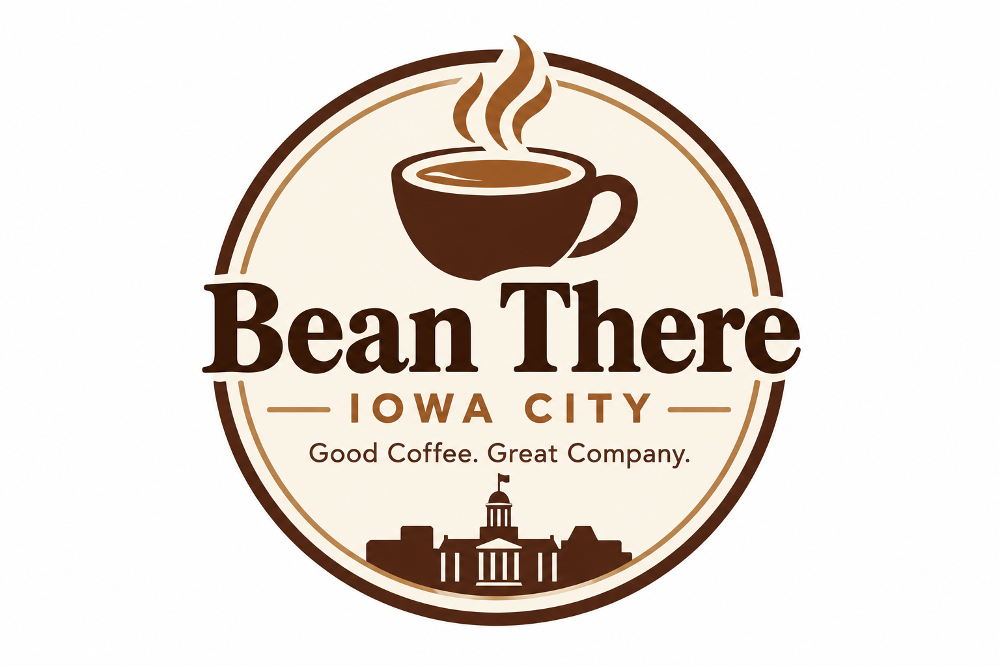

Best Coffee Shops in Iowa City
Meet three fictional favorites known for their signature drinks, welcoming service, and memorable atmosphere.
Read the reviews →
A friendly guide to your next favorite cup.
Looking for a cozy corner, a morning latte, or a place to power through your next assignment? Bean There Iowa City is your guide to fictional neighborhood coffee shops inspired by the energy of Iowa City.
Explore our made-up reviews, compare shop personalities, and find the atmosphere that fits your day.
Explore Top Picks Find a Study SpotMeet three fictional favorites known for their signature drinks, welcoming service, and memorable atmosphere.
Read the reviews →Find fictional coffee stops designed for the imagined routines of students between classes and campus activities.
Explore campus-area picks →Compare fictional spaces for solo work, group projects, and a change of scenery from the library.
Find your focus →A great coffee shop can be a meeting place, a creative workspace, or a small break in a busy day. Our guide focuses on the details that shape an experience: drink choices, seating, atmosphere, and convenience.
Every shop, review, rating, and reviewer featured on this website is fictional and was created for a class project.
☕ Drinks: Is there something memorable on the menu?
🪑 Atmosphere: Does the space fit the occasion?
📍 Convenience: Is it a useful stop in a typical day?
💬 Experience: Does the fictional review describe a welcoming visit?
Not sure where to begin? Start with our overall favorites, browse the campus-area guide, or head straight to the study spot recommendations.
Browse all three fictional favorites →